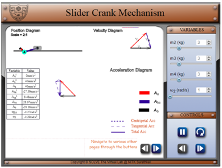
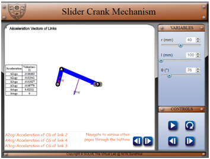
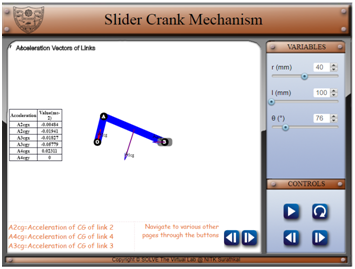
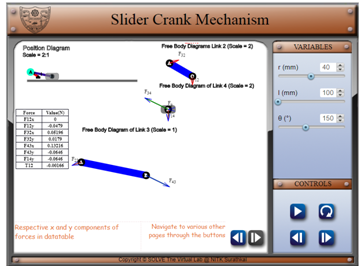
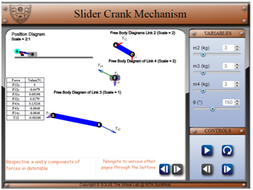

Objective
After completing the experiments on Dynamic analysis of Slider Crank mechanisms
- Students will be able to understand the concepts of dynamic analysis of slider crank mechanisms
- Calculate the forces on each bar
Prerequisites
Please go through the theory of the kinematic analysis of the slider crank mechanism before attempting this experiment
Theory
The slider crank mechanism is one of the most basic forms of closed loop mechanisms. It has a single degree of freedom and is often used to convert rotary motion into linear motion by varying link lengths. From an application perspective it is very important to understand the dynamics of such a system. The kinematics of the system is largely governed by the link length and so is the dynamics of the system. Through the process of the simulation, one would understand how to calculate the forces on each link for a constant angular velocity as input.
The dynamic analysis of the slider crank mechanism is covered after understanding the kinematic analysis since the acceleration of the links are required to calculate the forces on the link.
Given the fact that the acceleration of the links is known the dynamic analysis is done.
Disassembled view of the slider crank mechanism (Reference: RL Norton – Mechanics of Machines)
Link 2 :
F12x+F32x=m2aG2x
F12y+F32y=m2aG2y
T12+(R12xF12y+R12yF12x)+(R32xF32y-R32yF32x)=Ig2α2
Link 3 :
F43x-F32x=m3aG3x
F43y-F32y=m3aG3y
(R43xF43y-R43yF43x)-(R23xF32y-R23yF32x)=Ig3α3
Link 4 :
F14x-F43x+Fpx=m4aG4x
F14y-F43yFpy=m4aG4y
(R14xF14y-R14yF14x)-(R34xF43y-R34yF43x)+(RpxFpy-RpyFpx)=Ig4α4
The above equations are used to calculate forces on each link.

- Based on the kinematic analysis of the four bar linkage, the accelerations of the bar is figured out
- These accelerations are found out with two components
- Tangential Acceleration
- Centripetal Acceleration
- Both these components are used to calculate the accelerations at the CG of each link. In our case the CG is of each link is at the centre of each link
- For each link three equations are written down respectively and forces on each link are represented as variables
- In total 9 equations are formed with 9 variables. Using the concepts of linear algebra the 9 equations are solved and forces on each link is calculated. The simulation uses Gauss Elimination Method (Reference for linear algebra-NPTEL - https://www.youtube.com/watch?v=Spmar6neOOc)
- Based on the forces calculated the free body diagram of each link can also be represented through a single force creating acceleration and moment because the point of action of force is shifted from point of CG.
- Another representation of the forces is by representing it through an equivalent force displaced by a certain distance from the CG. Hence the moment is represented by equivalent force acting at a distance from the CG.
Simulation
- Kinematic analysis done on Slider Crank Mechanism
 - For this page the link lengths can be varied. The result of which can be seen on the position, velocity and acceleration diagram
- The numerical values of the position, velocity and acceleration of the linkage are shown in the data table located at the left-bottom corner
- The simulation has two modes
- Pause Mode
- Run Mode
In this mode the simulation is made to behave in such a way that the user inputs the input angle. In the screenshot displayed above the simulation is paused and the user can vary theta 2 values accordingly as per his/her wish
In this mode the simulation is made to behave in such a way that the user inputs the angular velocity of the four bar linkage.
Overall this screen of the simulation is used figure out the position, velocity and acceleration of the links.
- Acceleration of CGs
 This page is navigated to using the arrows at the bottom left.
This page is particularly used to find out the accelerations at the CG of the links. The acceleration values have been represented as a vector situated on the centre of the links which varies dynamically with respect to the variations in the input speed and angle.
- Offset Analysis
 Any body accelerating in space will experience an inertial force. The above simulation aims at simplifying the forces acting on the body of the links by representing the torque acting on the body by displacing the inertial forces parallelely away from the centre of the links through a distance. These offset distances are represented through the table.
- Dynamic analysis of Four bar Mechanism
 This screen is the last screen of the simulation showing the forces acting on the body through vectors. The values of these forces are shown in the table with their respective components. The user can control the mass of each link by navigating through the variables section using the arrows in the control section.
